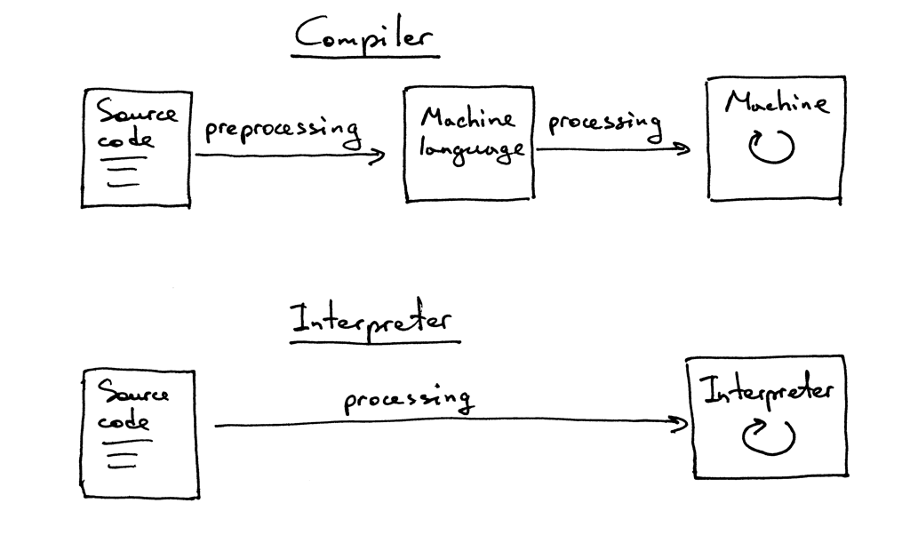
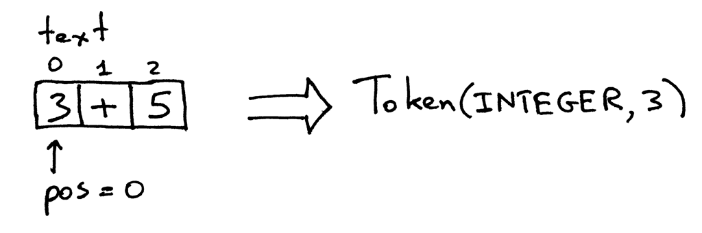
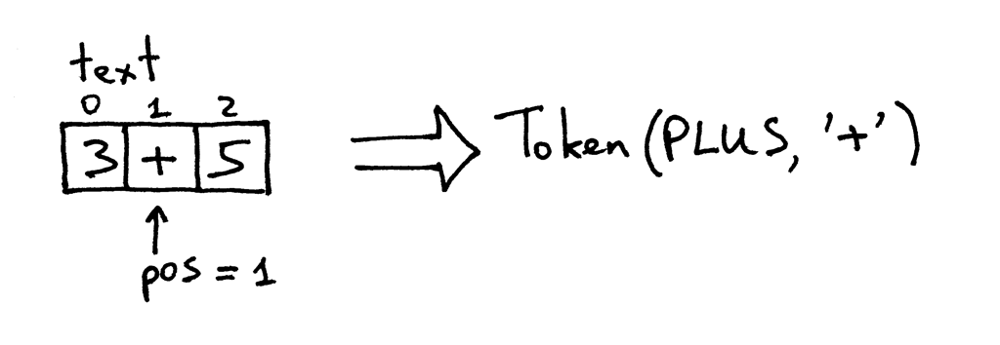
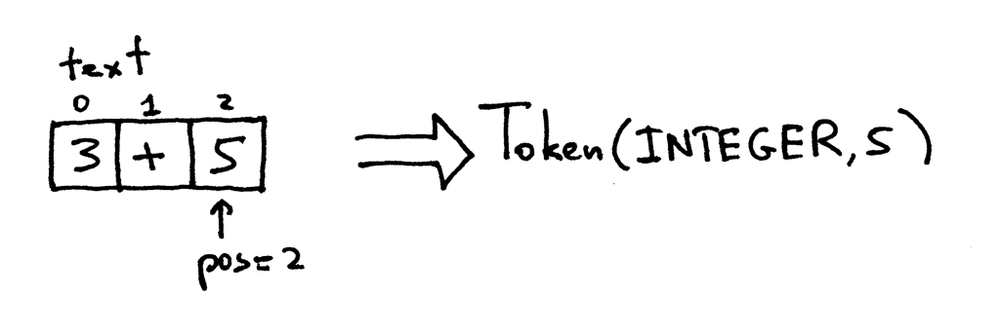
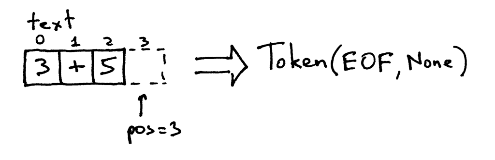

I will give you three reasons.
To write an interpreter or a compiler you have to have a lot of technical skills that you need to use together. Writing an interpreter or a compiler will help you improve those skills and become a better software developer. As well, the skills you will learn are useful in writing any software, not just interpreters or compilers.
You really want to know how computers work. Often interpreters and compilers look like magic. And you shouldn’t be comfortable with that magic. You want to demystify the process of building an interpreter and a compiler, understand how they work, and get in control of things.
You want to create your own programming language or domain specific language. If you create one, you will also need to create either an interpreter or a compiler for it. Recently, there has been a resurgence of interest in new programming languages. And you can see a new programming language pop up almost every day: Elixir, Go, Rust just to name a few.
What are interpreters and compilers?
The goal of an interpreter or a compiler is to translate a source program in some high-level language into some other form. Pretty vague, but later in the series you will learn exactly what the source program is translated into.
At this point you may also wonder what the difference is between an interpreter and a compiler. For the purpose of this series, let’s agree that if a translator translates a source program into machine language, it is a compiler. If a translator processes and executes the source program without translating it into machine language first, it is an interpreter. Visually it looks something like this:

We are going to create a simple interpreter for a large subset of Pascal language. At the end of this series you will have working Pascal interpreter and a source-level debugger like Python’s pdb.
The implementation language of the Pascal interpreter will be Python, but you can use any language you want because the ideas presented don’t depend on any particular implementation language.
# Token types
#
# EOF (end-of-file) token is used to indicate that
# there is no more input left for lexical analysis
INTEGER, PLUS, EOF = 'INTEGER', 'PLUS', 'EOF'
class Token(object):
def __init__(self, type, value):
# token type: INTEGER, PLUS, EOF
self.type = type
# token value: 0, 1, 2, 3, 4, 5, 6, 7, 8, 9, '+', or None
self.value = value
def __str__(self):
"""String representation of the class instance.
Examples:
Token(INTEGER, 3)
Token(PLUS, '+')
"""
return 'Token({type}, {value})'.format(
type=self.type,
value=repr(self.value)
)
def __repr__(self):
return self.__str__()
class Interpreter(object):
def __init__(self, text):
# client string input, e.g. "3+5"
self.text = text
# self.pos is an index into self.text
self.pos = 0
# current token instance
self.current_token = None
def error(self):
raise Exception('Error parsing input')
def get_next_token(self):
"""Lexical analyzer (also know as scanner or tokenizer)
This method is responsible for breaking a sentence
apart into tokens. One token at a time.
"""
text = self.text
# is self.pos index past the end of the self.text ?
# if so, then return EOF token because there is no more
# input left to convert into tokens
if self.pos > len(text) - 1:
return Token(EOF, None)
# get a character at the position self.pos and decide
# what token to create based on the single character
current_char = text[self.pos]
# if the character is a digit then convert it to
# integer, create an INTEGER token, increment self.pos
# index to point to the next character after the digit,
# and return the INTEGER token
if current_char.isdigit():
token = Token(INTEGER, int(current_char))
self.pos += 1
return token
if current_char == '+':
token = Token(PLUS, current_char)
self.pos += 1
return token
self.error()
def eat(self, token_type):
# compare the current token type with the passed token
# type and if they match then "eat" the current token
# and assign the next token to the self.current_token,
# otherwise raise an exception
if self.current_token.type == token_type:
self.current_token = self.get_next_token()
else:
self.error()
def expr(self):
""" expr -> INTEGER PLUS INTEGER """
# set current token to the first token taken from the input
self.current_token = self.get_next_token()
# we expect the current token to be a single-digit integer
left = self.current_token
self.eat(INTEGER)
# we expect the current token to be a '+' token
op = self.current_token
self.eat(PLUS)
# we expect the current token to be a single-digit integer
right = self.current_token
self.eat(INTEGER)
# after the above call the self.current_token is set to
# EOF token
# at this point INTEGER PLUS INTEGER sequence of tokens
# has been successfully found and the method can just
# return the result of adding two integers, thus
# effectively interpreting client input
result = left.value + right.value
return result
def main():
while True:
try:
try:
text = input('calc> ')
except NameError: # python3
text = raw_input('calc> ')
except EOFError:
break
if not text:
continue
interpreter = Interpreter(text)
result = interpreter.expr()
print(result)
if __name__ == '__main__':
main()For your simple calculator to work properly without throwing an exception, your input needs to follow certain rules:
- Only single digit integers are allowed in the input
- The only arithmetic operation supported at the moment is addition
- No whitesapce characters are allowed anywhere in the input
Those restrictions are necessary to make the calculator simple.
When you enter an expression 3+5 on the command line your interpreter gets a string 3+5 . In order for the interpreter to actually understand what to do with that string it first needs to break the input 3+5 into components called tokens. A token is an object that has a type and a value. For example, for the string 3 the type of the token will be INTEGER and the corresponding value will be integer 3.
The process of breaking the input string into tokens is called lexical analysis. So, the first step your interpreter needs to do is read the input of characters and convert it into a stream of tokens.
The part of the interpreter that does it is called a lexical analyzer, or lexer for short. You might also encounter other names for the same component, like scanner or tokenizer. They all mean the same: the part of your interpreter or compiler that turns the input of characters into a stream of tokens.
The method get_next_token of the Interpreter class is your lexical analyzer. Every time you call it, you get the next token created from the input of characters passed to the interpreter.
Let’s take a closer look at the method itself and see how it actually dose its job of converting characters into tokens. The input is stored in the variable text that holds the input string and pos is an index into that stirng. pos is initially set to 0 and points to the character 3. The method first checks whether the character is a digit and if so, it increments pos and returns a token instance with the type INTEGER and the value set to the integer value of the string 3, which is an integer 3:

The pos now points to the + character in the text. The next time you call the method, it tests if a character at the position pos is a digit and then it tests if the character is a plus sign, which it is. As a result the method increments pos and returns a newly created token with the type PLUS and value +:

The pos now points to character 5. When you call the get_next_token method again the method checks if it’s a digit, which it is, so it increment pos and returns a new INTEGER token with the value of the token set to integer 5:

Because the pos index is now past the end of the string 3+5 the get_next_token method returns the EOF token every time you call it:

So now that your interpreter has access to the stream of tokens made from the input characters, the interpreter needs to do something with it: it needs to find the structure in the flat stream of tokens it gets from the lexer get_next_token. Your interpreter expects to find the following structure in that stream: INTEGER -> PLUS -> INTEGER. That is, it tries to find a sequence of tokens: integer followed by a plus sign followed by an integer.
The method responsible for finding and interpreting that structure is expr. This method verifies that the sequence of tokens does indeed correspond to the expected sequence of tokens, i.e INTEGER -> PLUS -> INTEGER. After it’s successfully confirmed the structure, it generates the result by adding the value of the token on the left side of the PLUS and the right side of the PLUS, thus successfully interpreting the arithmetic expression you passed to the interpreter.
The expr method itself uses the helper method eat to verify that the token type passed to the eat method matches the current token type. After matching the passed token type the eat method gets the next token and assigns it to the _current_token_ variable, thus effectively “eating” the currently matched token and advancing the imaginary pointer in the stream of tokens. If the structure in the stream of tokens doesn’t correspond to the expected INTEGER PLUS INTEGER sequence of tokens the eat method throws an exception.
Let’s recap what your interpreter does to evaluate an arithmetic expression:
- The interpreter accepts an input string, let’s say “3+5”
- The interpreter calls the expr method to find a structure in the stream of tokens returned by the lexical analyzer get_next_token. The structure it tries to find is of the form INTEGER PLUS INTEGER. After it’s confirmed the structure, it interprets the input by adding the values of two INTEGER tokens because it’s clear to the interpreter at that point that what it needs to do is add two integers, 3 and 5.